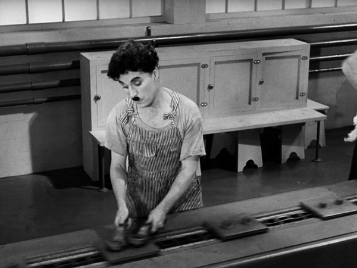
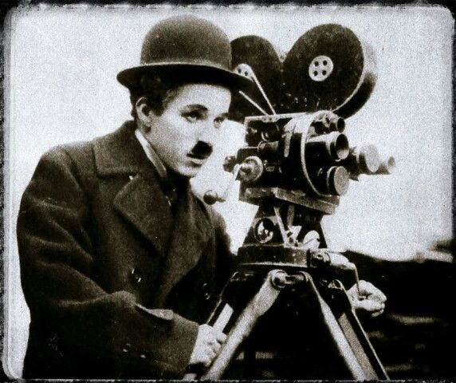

HISTÓRIA DO CINEMA
Foi no final do século XIX, em 1895, na França, os irmãos Louis e Auguste Lumière inventaram o cinema. Na primeira metade deste século a fotografia já havia sido inventada por Louis-Jacques Daguerre e Joseph Nicéphore Niepce, possibilitando esta criação revolucionária no mundo das artes e da indústria cultural: o cinema.
Para se chegar à projeção cinematográfica atual, muitos processos de investigação foram feitos em relação aos fundamentos da ciência óptica. Já vem dos primórdios da humanidade a necessidade de registrar movimentos através de pinturas e desenhos nas paredes.
Há aproximadamente sete mil anos atrás, no oriente, os chineses já projetavam sombras de diferentes figuras recortadas e manipuladas sobre a parede, um jogo de sombras, próprio do seu teatro de marionetes.
No século XV, Leonardo da Vinci realizou trabalhos utilizando a projeção da luz na superfície, criando a Câmara Escura, que era uma caixa fechada, possuindo um orifício com uma lente, local destinado a passagem da luz produzida pelos objetos externos. A imagem refletida no interior dessa caixa era a inversão do que se via na realidade. Mais adiante, no século XVII, O alemão Athanasius Kirchner criou a Lanterna Mágica, objeto composto de um cilindro iluminado à vela, para projetar imagens desenhadas em uma lâmina de vidro.
No século XIX, muitos aparelhos que buscavam estudar o fenômeno da persistência retiniana foram construídos, este fenômeno é o que mantém a imagem em fração de segundos na retina. Joseph-Antoine Plateau foi o primeiro a medir o tempo da persistência retiniana, concluindo que uma ilusão de movimento necessita de uma série de imagens fixas, sucedendo-se pela razão de dez imagens por segundo. Plateau, em 1832, criou o Fenacistoscópio, apresentando várias figuras de uma mesma pessoa em posições diferentes desenhadas em um disco, de forma que ao girá-lo, elas passam a formar um movimento.

No século XIX, muitos aparelhos que buscavam estudar o fenômeno da persistência retiniana foram construídos, este fenômeno é o que mantém a imagem em fração de segundos na retina. Joseph-Antoine Plateau foi o primeiro a medir o tempo da persistência retiniana, concluindo que uma ilusão de movimento necessita de uma série de imagens fixas, sucedendo-se pela razão de dez imagens por segundo. Plateau, em 1832, criou o Fenacistoscópio, apresentando várias figuras de uma mesma pessoa em posições diferentes desenhadas em um disco, de forma que ao girá-lo, elas passam a formar um movimento.
Criado pelo francês Charles Émile Reynaud o Praxinoscópio foi um invento importante para o surgimento do cinema. Este aparelho era um tambor giratório com desenhos colados na sua superfície interior, e no centro deste tambor havia diversos espelhos. Na medida em que girava-se o tambor, no centro, onde ficavam os espelhos, via-se os desenhos se unindo em um movimento harmonioso. Dentre outros inventos, há o Cinetoscópio, inventado por Thomas A. Edison, que consistia em um filme perfurado, projetado em uma tela no interior de uma máquina, na qual só cabia uma pessoa em cada apresentação. A projeção precisava ser vista por uma lente de aumento.
Em 1890, Edison projeta diversos filmes de seu estúdio, aos quais encontra-se “Black Maria”, considerado o primeiro filme da história do cinema. É a partir do aperfeiçoamento do Cinetoscópio, que o Cinematógrafo é criado pelos irmãos Louis e Auguste Lumière, na França, em 1895. O cinematógrafo era ao mesmo tempo filmador, copiador e projetor, e foi considerado o primeiro aparelho realmente qualificado de cinema.
Louis Lumière foi o primeiro cineasta a realizar documentários em curta metragem na história do cinema. O primeiro se intitulava “Sortie de L’usine Lumière à Lyon” (Empregados deixando a Fábrica Lumière), e possuia 45 segundos de duração. Neste mesmo ano de 1895, Thomas Edison projeta seu primeiro filme, “Vitascope”.
O americano Edwin S. Porter, apropriou-se dos estilos documentarista dos irmãos Lumière e os de ficção com uso de maquetes, truques ópticos, e efeitos especiais teatrais de Georges Méliès, para produzir “Great Train Robbery” (O grande roubo do trem), em 1903, um modelo de filme de ação, obtendo êxito e contribuindo para que o cinema se popularizasse e entrasse para a indústria cultural.
